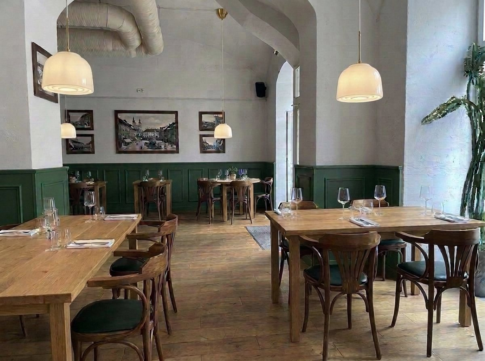
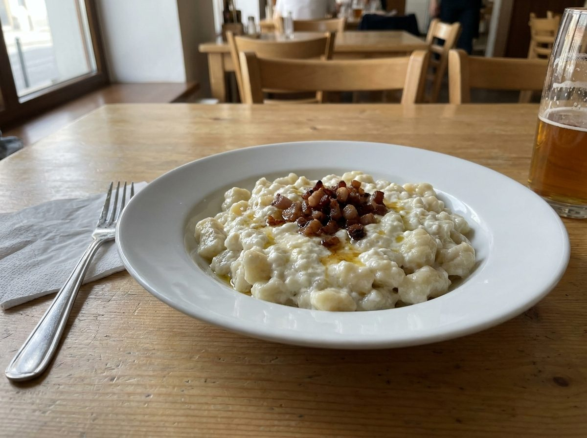
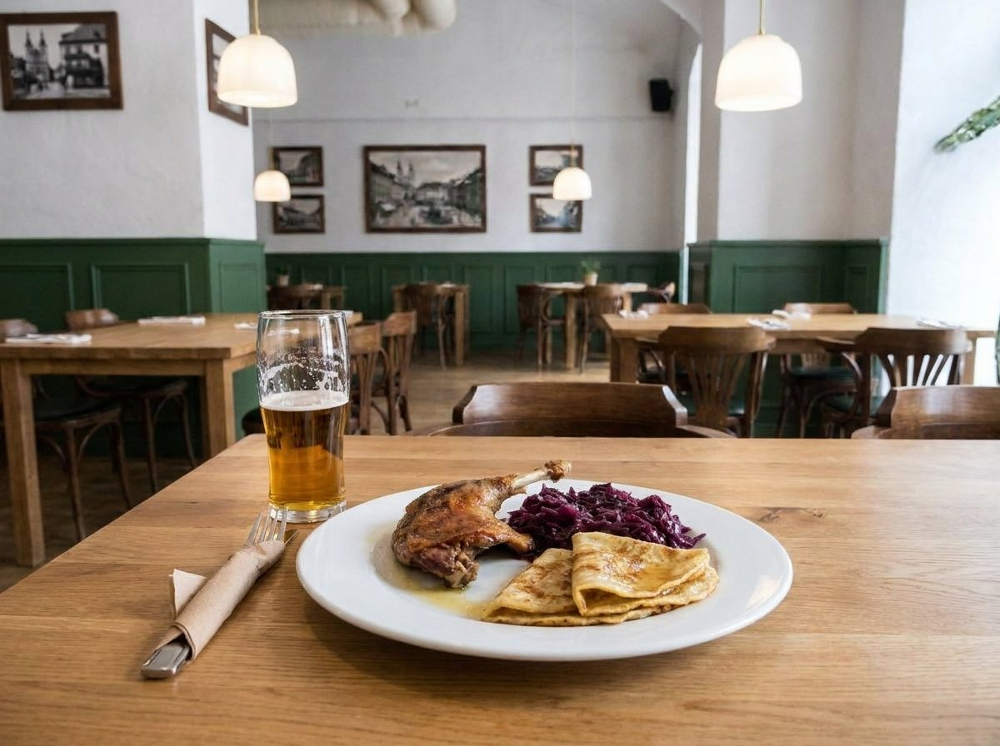
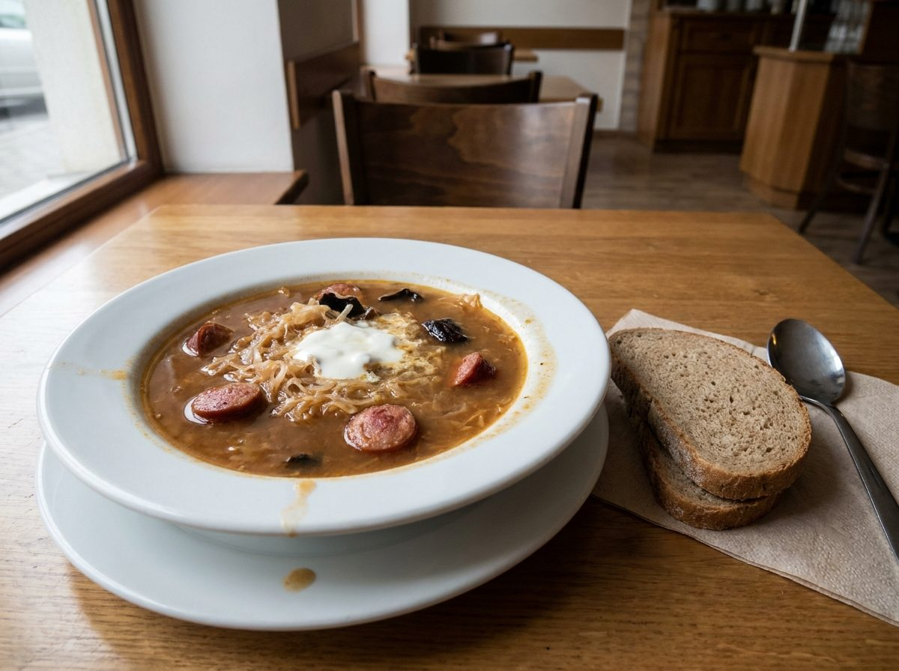
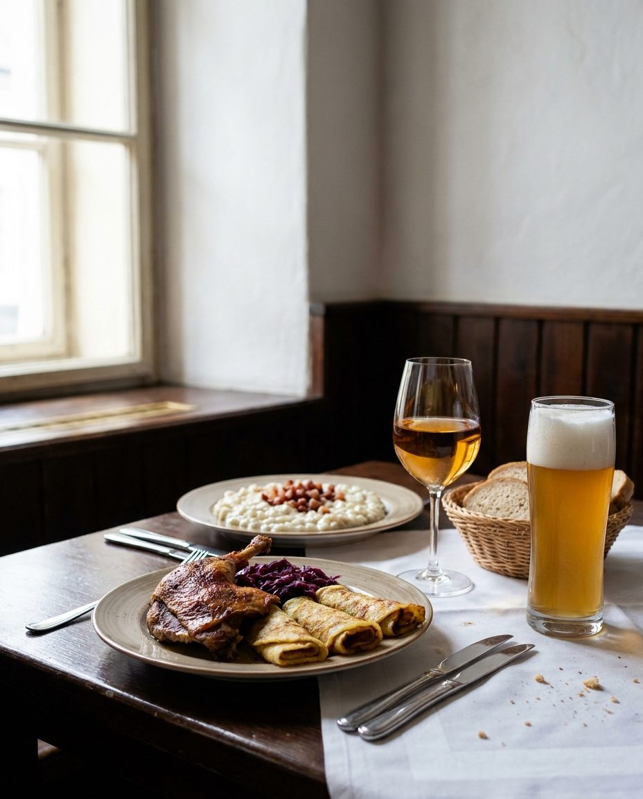
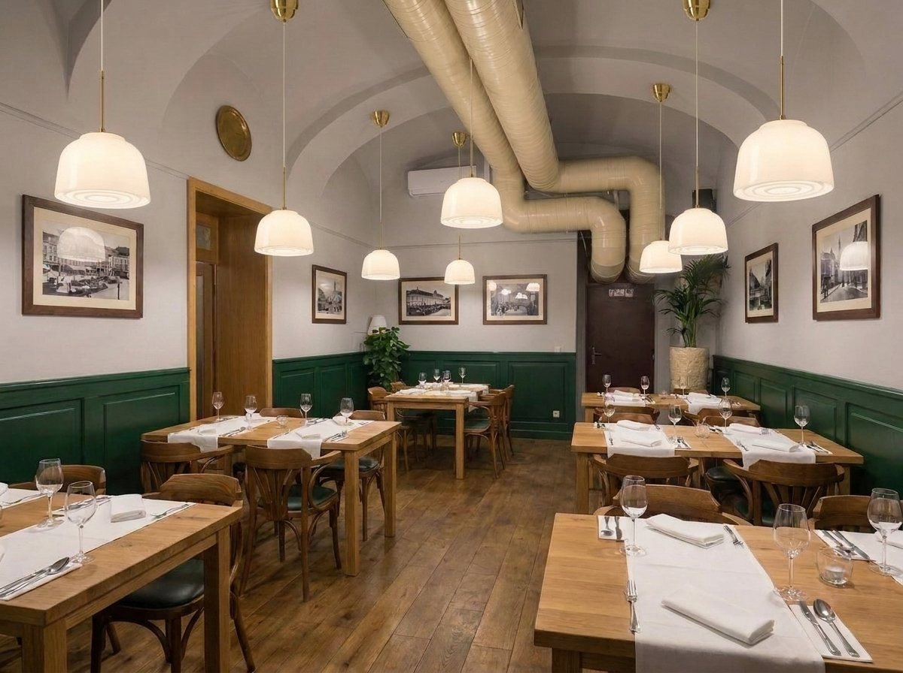
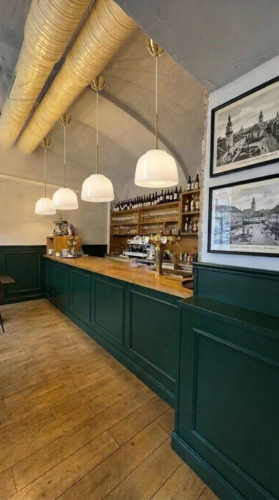
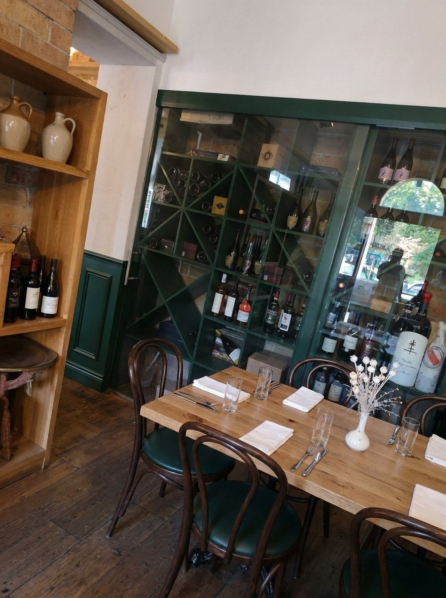
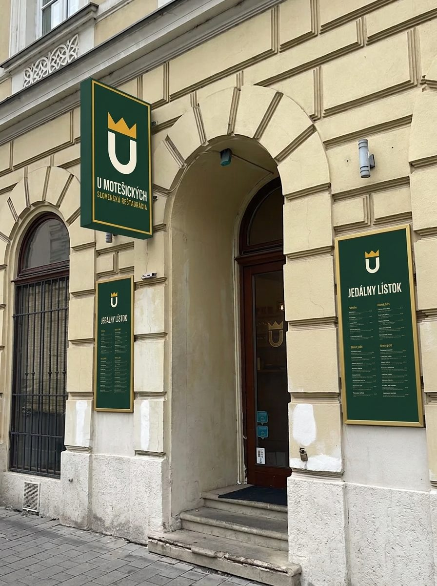

Gorkého 5 · Palác Motešických · Staré Mesto
Slovenská kuchyňa v paláci Motešických
Reštaurácia dve minúty od Hviezdoslavovho námestia. Halušky, pirohy, guláš aj mäso z grilu, všetko varené od základu. K tomu čapované pivo a vína z Malých Karpát.

Denné menu pondelok – piatok 11:00 – 14:00 · polievka a hlavné jedlo za 9,90 € Pozrieť tento týždeň
Jedálny lístok
Krátky lístok, ktorý kuchyňa varí každý deň čerstvo. Cestá na halušky, pirohy aj šúľance robíme sami.



Alergény: 1 obilniny obsahujúce lepok · 3 vajcia · 7 mlieko · 8 orechy · 9 zeler · 10 horčica. Hmotnosť mäsa je uvedená v surovom stave.
Pivo a víno
K slovenskému jedlu patrí dobre načapované pivo rovnako ako pohár veltlínu. Čapujeme ležiaky aj pivo z malých slovenských pivovarov, vína berieme od vinárov spod Malých Karpát.

| Pivo | 0,3 l | 0,5 l |
|---|---|---|
| Svetlý ležiak 12°čapovanýPale lager 12°, draught | 2,60 € | 3,60 € |
| Svetlé výčapné 10°čapovanéLight pale lager 10°, draught | 2,20 € | 3,10 € |
| Tmavý ležiak 11°čapovanýDark lager 11°, draught | 2,60 € | 3,60 € |
| Pivo zo slovenského remeselného pivovaručapované, ponuka sa meníSlovak craft beer on tap, changing selection | 2,90 € | 3,90 € |
| Nealkoholické pivočapovanéAlcohol-free lager, draught | 2,20 € | 2,90 € |
| Víno | 0,1 l | 0,75 l |
|---|---|---|
| Veltlínske zelenébiele, suchéGrüner Veltliner, dry white | 3,20 € | 21,00 € |
| Rizling vlašskýbiele, suchéWelschriesling, dry white | 3,20 € | 21,00 € |
| Frankovka modrá roséružové, polosuchéBlaufränkisch rosé, off-dry | 3,40 € | 22,00 € |
| Frankovka modráčervené, suchéBlaufränkisch, dry red | 3,40 € | 22,00 € |
| Vínny strekbiele víno so sódou, 0,3 lWhite wine spritzer, 0.3 l | 3,50 € |
Pálenky a likéry
- Slivovica 52 %3,90 €
- Hruškovica 45 %3,90 €
- Marhuľovica 45 %3,90 €
- Borovička 40 %3,20 €
- Bylinný likér 38 %3,20 €
- Medovinateplá alebo studená, 1 dcl3,50 €
Ceny za 4 cl
Nealko
- Čapovaná kofola0,3 l / 0,5 l2,20 / 2,90 €
- Vinea biela, červená0,25 l2,90 €
- Domáca bazová limonáda0,4 l3,90 €
- Jablkový mušt0,25 l2,90 €
- Minerálna vodaperlivá alebo neperlivá, 0,33 l2,50 €
- Voda z vodovodukarafa 1 l1,00 €
Káva a čaj
- Espresso2,40 €
- Espresso s mliekom2,60 €
- Cappuccino3,20 €
- Čajčierny, ovocný alebo bylinkový2,80 €
- Horúca malina s medom3,50 €
Stolovalo sa tu dávno pred nami

V roku 1840 kúpila tunajší hostinec rodina Motešických a prestavala ho na mestský palác, ktorý dnes stojí medzi Gorkého a Laurinskou ulicou.
Dnes tu varíme slovenskú kuchyňu bez skratiek. Vývar ťaháme od rána, halušky hádžeme do vody až po vašej objednávke a mäso ide na gril načerstvo. Či prídete na obed z práce, na večeru pred divadlom alebo s rodinou v nedeľu, stôl pre vás nájdeme.
- Rodinné oslavy a firemné večere Stôl až pre 20 hostí, stačí zavolať deň vopred.
- Kuchyňa do 22:00 Dezert a pohár vína aj po predstavení.
- Deti sú vítané Detská stolička a polovičné porcie sú samozrejmosť.


Príďte, miesto vám podržíme
Gorkého 5, 811 01 Bratislava
Otvoriť v mapách
| Pondelok – Štvrtok | 11:00 – 23:00 |
|---|---|
| Piatok – Sobota | 11:00 – 24:00 |
| Nedeľa | 11:00 – 22:00 |
